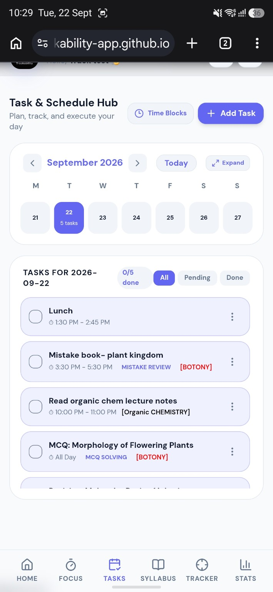
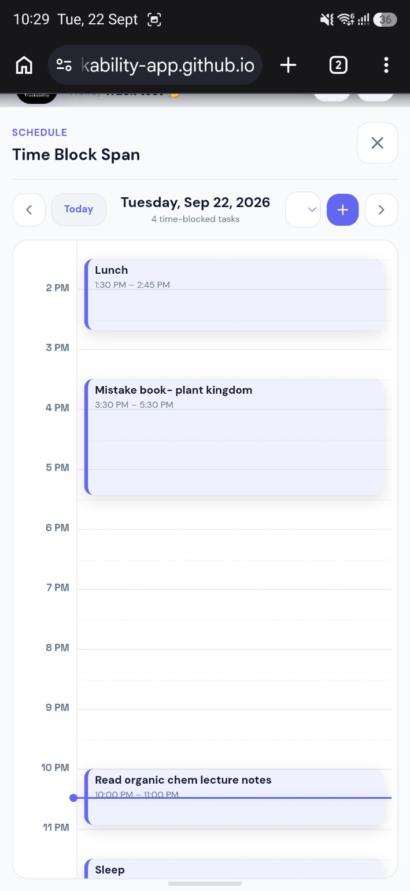
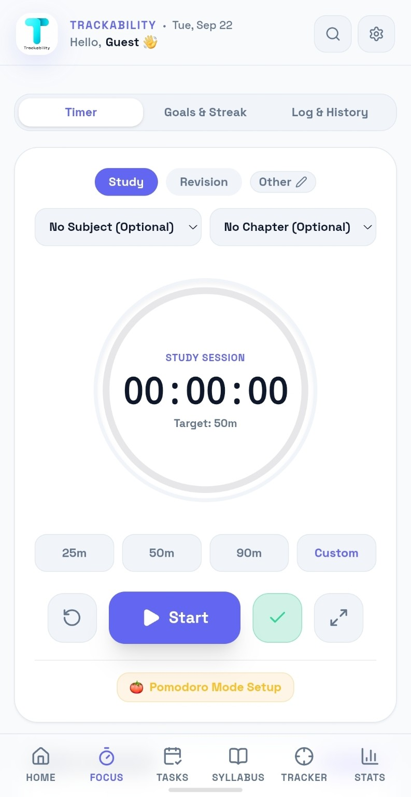
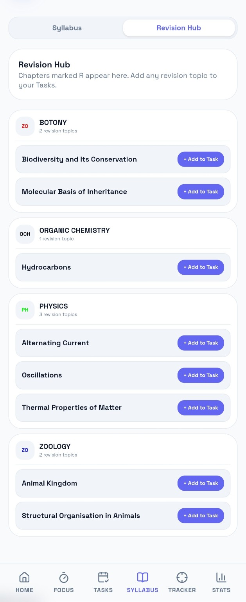
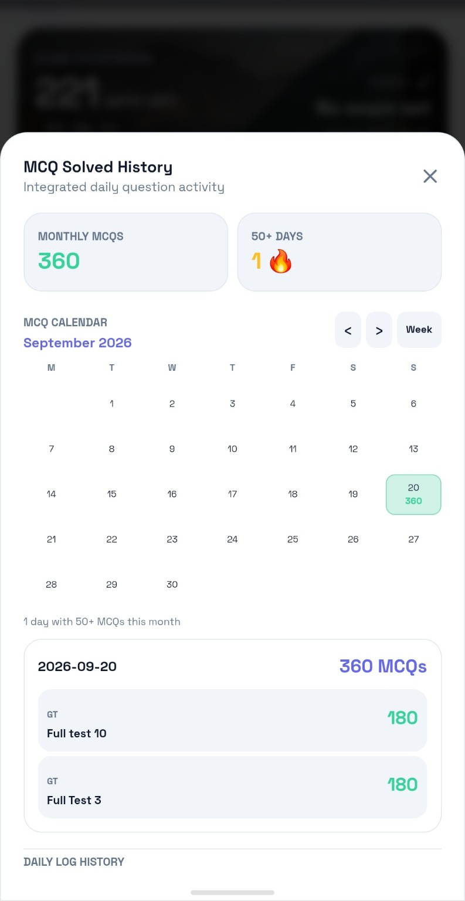
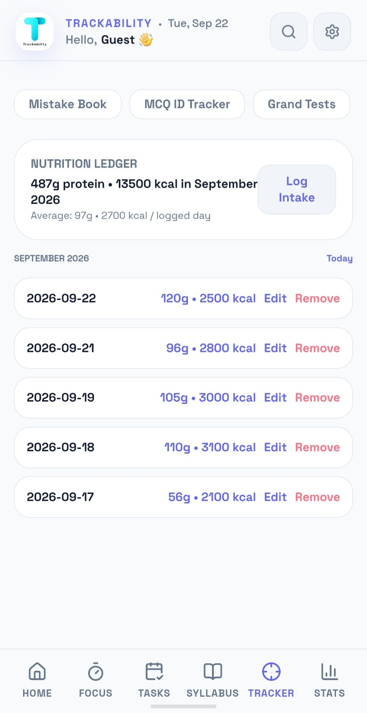
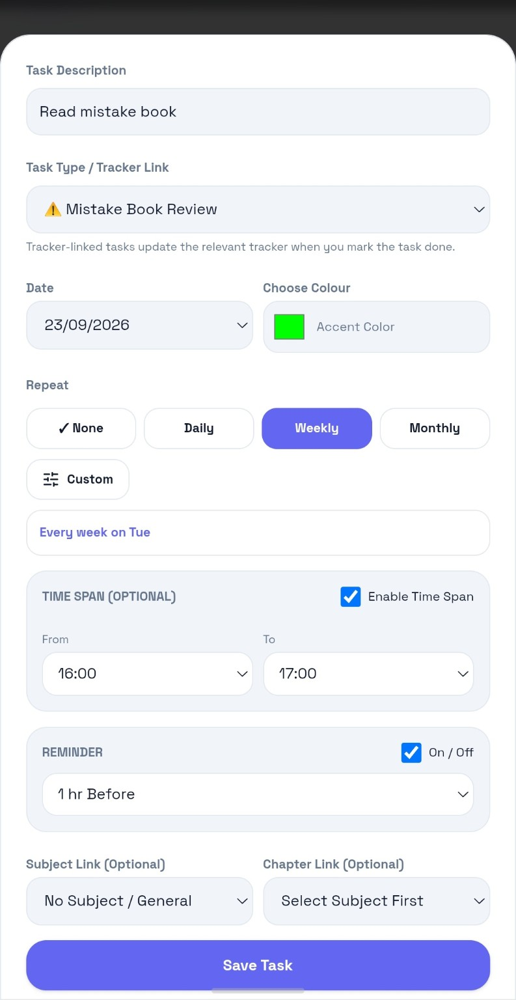
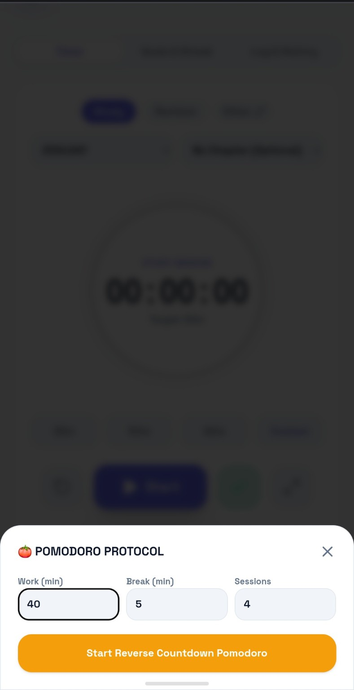
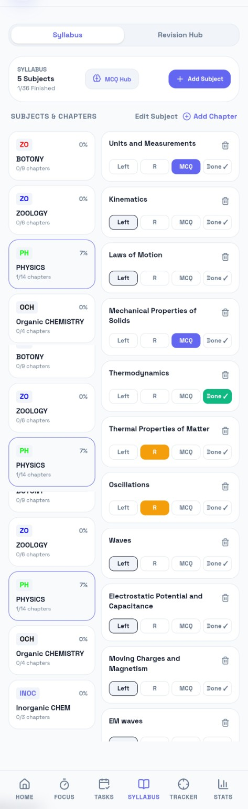
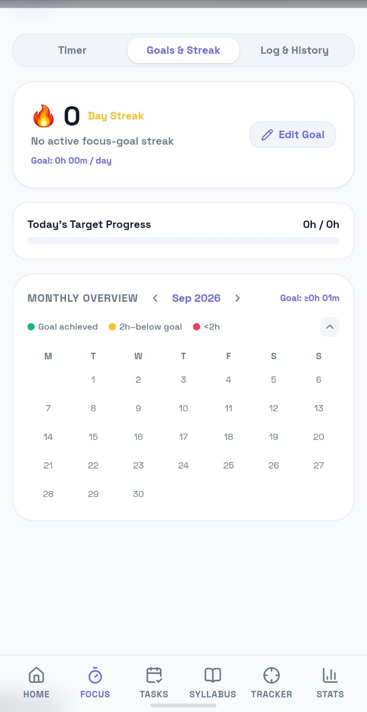

Tasks & time blocks
Schedule work into real time spans, repeat tasks, add reminders, and see the day at a glance.
Trackability brings your study plan, focus sessions, MCQs, syllabus, revision, tasks and personal progress into one calm workspace.

Trackability is built around the way students actually prepare: plan the work, do the work, measure it, and review it.
Schedule work into real time spans, repeat tasks, add reminders, and see the day at a glance.
Study, revision or other sessions with goals, streaks, history and configurable Pomodoro cycles.
Log question activity across sources, see history, streaks and daily totals, and keep practice visible.
Mark chapter status, identify revision topics and turn revision or MCQ chapters directly into tasks.
Turn daily activity into a longer-term picture of how consistently you are preparing.
Keep gym, sleep, nutrition and other routines alongside your preparation instead of losing them elsewhere.
These are real Trackability screens. Use the tour to see how planning, focusing, studying and tracking connect.

Add a task, choose what it connects to, set a date, repeat it when needed, add a time span and reminder — then see it on your schedule.
Trackability is designed to make small daily actions accumulate into a picture you can understand.
Use real product screens throughout the website so visitors can understand the product before they ever download it.








Studying is one part of the system. Planning what to do, deciding when to do it, recording what you actually did, revising weak areas and keeping your routine on track are all part of the same process.
Trackability is being built around that complete loop — without forcing you to jump between a planner, a timer, a question counter and separate personal trackers.

Explore Trackability and see how the workflow fits together. The current button opens the live demo; when the mobile app launches, this destination can become your Play Store / App Store link.
Let’s get started →